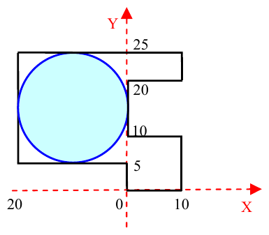

The 2004 28th Annual ICPC World Finals · Problem B
In these fast-paced times, companies are investing in heliports to reduce travel time for their busy executives. The heliports are typically circular landing pads, constructed on the roofs of the companies’ headquarters.
You must write a program that finds the largest radius for a circular heliport that can be constructed on the flat roof of a building that is in the form of a simple polygon. Since this is merely the design phase of the construction effort, your program must find only the radius of the heliport. The maximum radius for a heliport in the diagram shown is 10.

The input file contains several test cases. Each test case consists of two lines. The first line consists of an even integer n (4 ≤ n ≤ 20), which is the number of the sides of the building. The second line consists of n pairs of the form (m, d), where m is an integer (1 ≤ m ≤ 50) and d is a letter (U, R, D, L). Assuming the roof is drawn on the Cartesian plane, m is the length of a roof boundary segment and d is the direction of that segment as you travel counterclockwise around the roof. U, R, D, and L mean “Up,” “Right,” “Down,” and “Left” respectively. The boundary segments of the roof, which are parallel to the x and y axes, are given in counterclockwise order. The starting position is the origin (0, 0).
Input for the last test case is followed by a line consisting of the number 0.
For each test case, the output consists of a separate line containing the case number (starting with 1) and a real number (rounded to two digits after the decimal point) representing the radius of the heliport. Print a blank line between cases as shown in the sample output.
4 2 R 2 U 2 L 2 D 10 10 R 10 U 10 L 10 U 10 R 5 U 30 L 20 D 20 R 5 D 0
Case Number 1 radius is: 1.00 Case Number 2 radius is: 10.00